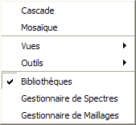

Le menu Fenêtre permet d'accéder aux différentes fenêtres de l'espace de travail de Tympan.
Les choix "Cascade" et "Mosaïque" permettent de réorganiser les fenêtres ouvertes.
Les sous-menus "Vues" et "Outils" permettent d'activer les vues ou barres d'outils, respectivement.
La dernière partie du menu affiche la liste des fenêtres ouvertes (pas forcément visibles) de l'espace de travail.